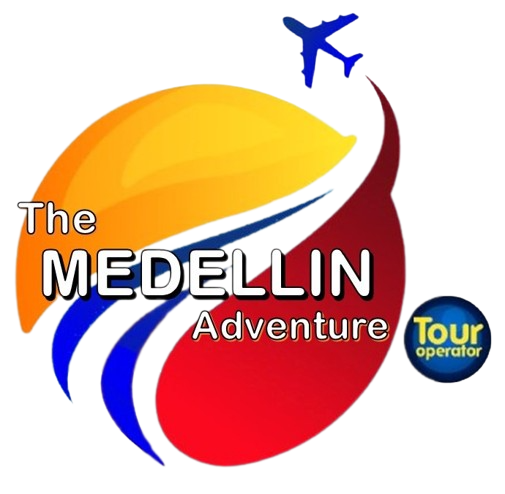

🌆 Medellín 360°: Vive la Ciudad
Plaza Botero
Museo de Antioquia y Plaza Botero
Esculturas y Tradición
Palacio Rafael Uribe Uribe
Parque de las Luces
Antiguo Ferrocarril
Antigua Estación Medellín
Alpujarra
Transición ciudad a naturaleza
Pies Descalzos
Conexión Naturaleza
Laberinto de Bambú
Edificio Inteligente EPM
Centro de convenciones y Teatro
✅ Proyecto avalado por
TECNOPARQUE - SENA
×
Tu navegador no soporta el video.
▶
🔊
✕
🎥



 +57 324 761 5677
+57 324 761 5677